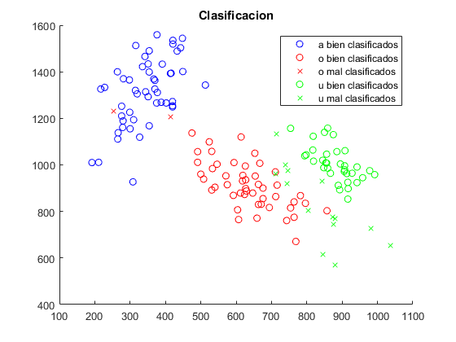
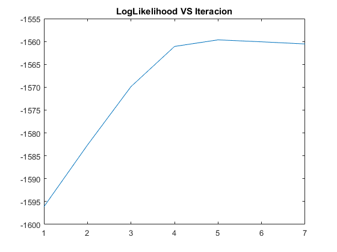

close all;
clear;
DEBUG = 0;
ITERACIONES = 8;
datos.a = importdata('c1.txt');
datos.o = importdata('c2.txt');
datos.u = importdata('c3.txt');
numero_de_elementos_para_inicializar = 5;
numero_de_puntos_de_train = 40;
numero_de_puntos_de_test = 10;
formantes.a.init = datos.a(1:numero_de_elementos_para_inicializar,1:2);
formantes.o.init = datos.o(1:numero_de_elementos_para_inicializar,1:2);
formantes.u.init = datos.u(1:numero_de_elementos_para_inicializar,1:2);
formantes.a.train = datos.a(1:numero_de_puntos_de_train,1:2);
formantes.o.train = datos.o(1:numero_de_puntos_de_train,1:2);
formantes.u.train = datos.u(1:numero_de_puntos_de_train,1:2);
formantes_train = [formantes.a.train; formantes.o.train; formantes.u.train];
formantes.a.test = datos.a(40:40 + numero_de_puntos_de_test,1:2);
formantes.o.test = datos.o(40:40 + numero_de_puntos_de_test,1:2);
formantes.u.test = datos.u(40:40 + numero_de_puntos_de_test,1:2);
mu_a = media(formantes.a.init);
mu_o = media(formantes.o.init);
mu_u = media(formantes.u.init);
mu = media(formantes_train);
sigma = sigma(formantes_train, mu);
sigma_a = sigma;
sigma_o = sigma;
sigma_u = sigma;
pi_a = 1/3;
pi_o = 1/3;
pi_u = 1/3;
iteracion = 1;
matriz_log_likelihood = [];
while(iteracion < ITERACIONES)
conjunto_a = [];
conjunto_o = [];
conjunto_u = [];
gama = zeros(length(formantes_train), 3);
for i = 1 : length(formantes_train)
gama_a_no_normalizada = normal(formantes_train(i, :), mu_a, sigma_a) * pi_a;
gama_o_no_normalizada = normal(formantes_train(i, :), mu_o, sigma_o) * pi_o;
gama_u_no_normalizada = normal(formantes_train(i, :), mu_u, sigma_u) * pi_u;
factor_de_normalizacion = gama_a_no_normalizada + gama_o_no_normalizada + ...
gama_u_no_normalizada;
gama_a = gama_a_no_normalizada / factor_de_normalizacion;
gama_o = gama_o_no_normalizada / factor_de_normalizacion;
gama_u = gama_u_no_normalizada / factor_de_normalizacion;
if(max([gama_a, gama_o, gama_u]) == gama_a)
conjunto_a = [conjunto_a; formantes_train(i, :)];
elseif(max([gama_a, gama_o, gama_u]) == gama_o)
conjunto_o = [conjunto_o; formantes_train(i, :)];
elseif(max([gama_a, gama_o, gama_u]) == gama_u)
conjunto_u = [conjunto_u; formantes_train(i, :)];
end
gama(i,1) = gama_a;
gama(i,2) = gama_o;
gama(i,3) = gama_u;
end
mu_a = 0;
mu_o = 0;
mu_a = 0;
for i = 1:length(formantes_train)
mu_a = mu_a + gama(i,1) * formantes_train(i, :);
mu_o = mu_o + gama(i,2) * formantes_train(i, :);
mu_u = mu_u + gama(i,3) * formantes_train(i, :);
end
mu_a = mu_a / sum(gama(:,1));
mu_o = mu_o / sum(gama(:,2));
mu_u = mu_u / sum(gama(:,3));
sigma_a = 0;
sigma_o = 0;
sigma_u = 0;
for i = 1:length(formantes_train)
sigma_a = sigma_a + gama(i,1) * (formantes_train(i, :) - mu_a)' * (formantes_train(i, :) - mu_a);
sigma_o = sigma_o + gama(i,2) * (formantes_train(i, :) - mu_o)' * (formantes_train(i, :) - mu_o);
sigma_u = sigma_u + gama(i,3) * (formantes_train(i, :) - mu_u)' * (formantes_train(i, :) - mu_u);
end
sigma_a = sigma_a / sum(gama(:,1));
sigma_o = sigma_o / sum(gama(:,2));
sigma_u = sigma_u / sum(gama(:,3));
pi_a = sum(gama(:,1)) / sum(sum(gama));
pi_o = sum(gama(:,2)) / sum(sum(gama));
pi_u = sum(gama(:,3)) / sum(sum(gama));
log_likelihood = 0;
for i = 1:length(formantes_train)
parte_a = normal(formantes_train(i, :), mu_a, sigma_a) * pi_a;
parte_o = normal(formantes_train(i, :), mu_o, sigma_o) * pi_o;
parte_u = normal(formantes_train(i, :), mu_u, sigma_u) * pi_u;
log_likelihood = log_likelihood + log(parte_a + parte_o + parte_u);
end
matriz_log_likelihood = [matriz_log_likelihood, log_likelihood];
if(DEBUG == 1)
figure(iteracion)
hold on;
plot(conjunto_a(:,1), conjunto_a(:,2), 'bo');
plot(conjunto_o(:,1), conjunto_o(:,2), 'ro');
plot(conjunto_u(:,1), conjunto_u(:,2), 'go');
end
iteracion = iteracion + 1;
end
a_bien = [];
a_mal = [];
o_bien = [];
o_mal = [];
u_bien = [];
u_mal = [];
formantes_a = datos.a(1:50,1:2);
formantes_o = datos.o(1:50,1:2);
formantes_u = datos.u(1:50,1:2);
resultados.a = zeros(length(formantes_a), 1);
resultados.o = zeros(length(formantes_o), 1);
resultados.u = zeros(length(formantes_u), 1);
for i = 1:length(formantes_a)
g_a = (-1/2) * log(det(sigma_a)) + (-1/2) * (formantes_a(i,:) - mu_a)...
* inv(sigma_a) * (formantes_a(i,:) - mu_a)' + log(pi_a);
g_o = (-1/2) * log(det(sigma_o)) + (-1/2) * (formantes_a(i,:) - mu_o)...
* inv(sigma_o) * (formantes_a(i,:) - mu_o)' + log(pi_o);
g_u = (-1/2) * log(det(sigma_u)) + (-1/2) * (formantes_a(i,:) - mu_u)...
* inv(sigma_u) * (formantes_a(i,:) - mu_u)' + log(pi_u);
if((g_a > g_o) && (g_a > g_u))
resultados.a(i) = 1;
a_bien = [a_bien; formantes_a(i,:)];
else
a_mal = [a_mal; formantes_a(i,:)];
end
end
for i = 1:length(formantes_o)
g_a = (-1/2) * log(det(sigma_a)) + (-1/2) * (formantes_o(i,:) - mu_a)...
* inv(sigma_a) * (formantes_o(i,:) - mu_a)' + log(pi_a);
g_o = (-1/2) * log(det(sigma_o)) + (-1/2) * (formantes_o(i,:) - mu_o)...
* inv(sigma_o) * (formantes_o(i,:) - mu_o)' + log(pi_o);
g_u = (-1/2) * log(det(sigma_u)) + (-1/2) * (formantes_o(i,:) - mu_u)...
* inv(sigma_u) * (formantes_o(i,:) - mu_u)' + log(pi_u);
if((g_o > g_a) && (g_o > g_u))
resultados.o(i) = 1;
o_bien = [o_bien; formantes_o(i,:)];
else
o_mal = [o_mal; formantes_o(i,:)];
end
end
for i = 1:length(formantes_u)
g_a = (-1/2) * log(det(sigma_a)) + (-1/2) * (formantes_u(i,:) - mu_a)...
* inv(sigma_a) * (formantes_u(i,:) - mu_a)' + log(pi_a);
g_o = (-1/2) * log(det(sigma_o)) + (-1/2) * (formantes_u(i,:) - mu_o)...
* inv(sigma_o) * (formantes_u(i,:) - mu_o)' + log(pi_o);
g_u = (-1/2) * log(det(sigma_u)) + (-1/2) * (formantes_u(i,:) - mu_u)...
* inv(sigma_u) * (formantes_u(i,:) - mu_u)' + log(pi_u);
if((g_u > g_a) && (g_u > g_o))
resultados.u(i) = 1;
u_bien = [u_bien; formantes_u(i,:)];
else
u_mal = [u_mal; formantes_u(i,:)];
end
end
if(DEBUG == 0)
figure(1);
hold on;
plot(a_bien(:,1), a_bien(:,2), 'bo');
plot(o_bien(:,1), o_bien(:,2), 'ro');
plot(o_mal(:,1), o_mal(:,2), 'rx');
plot(u_bien(:,1), u_bien(:,2), 'go');
plot(u_mal(:,1), u_mal(:,2), 'gx');
legend('a bien clasificados',...
'o bien clasificados', 'o mal clasificados',...
'u bien clasificados', 'u mal clasificados');
title('Clasificacion');
end
figure(iteracion)
plot(matriz_log_likelihood);
title('LogLikelihood VS Iteracion');
resultados = [resultados.a(40:50); resultados.o(40:50); resultados.u(40:50)];
ErrorRatio = 100 - mean(resultados) * 100
ErrorRatio =
12.1212
 